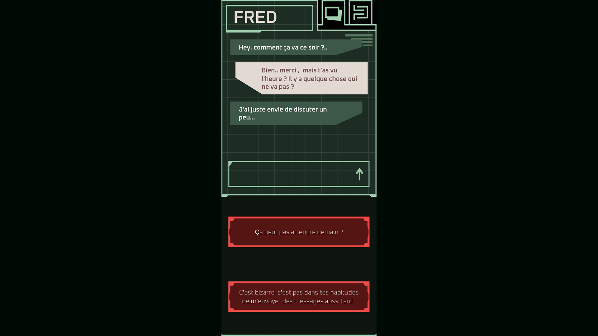
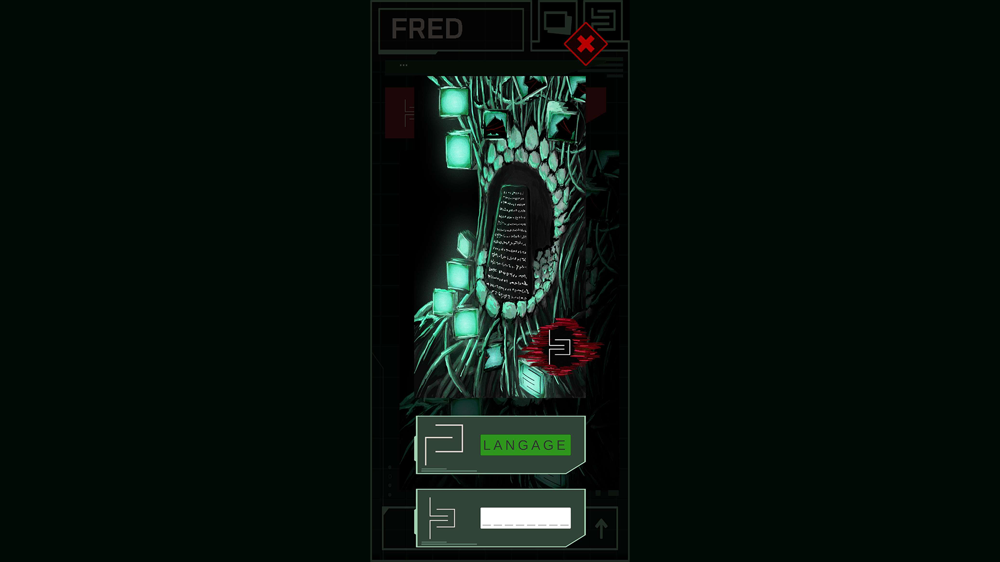

Dialogue Graph
Je me suis occupé du tool du Dialogue Graph, en reprenant et adaptant le système gagnant d'un cours. Il repose sur l'API Graph View de Unity, permettant de créer les dialogues visuellement sous forme de nœuds connectés, ce qui facilite le travail pour toute l'équipe.
Mécanique de traduction
J'ai participé à une mécanique de traduction où le joueur écrit la traduction d'un symbole affiché à l'écran. Mon rôle était principalement sur l'idéation et le support technique pour débloquer les problématiques rencontrées.